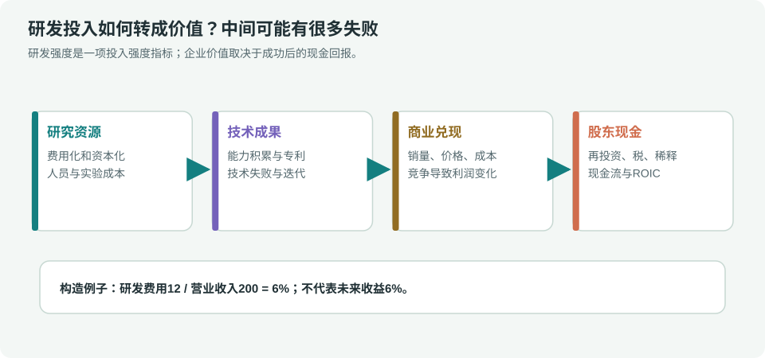
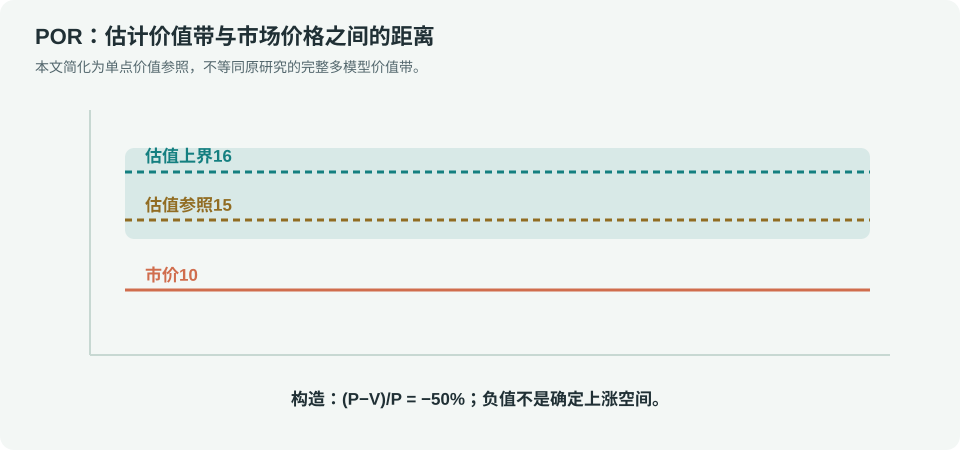
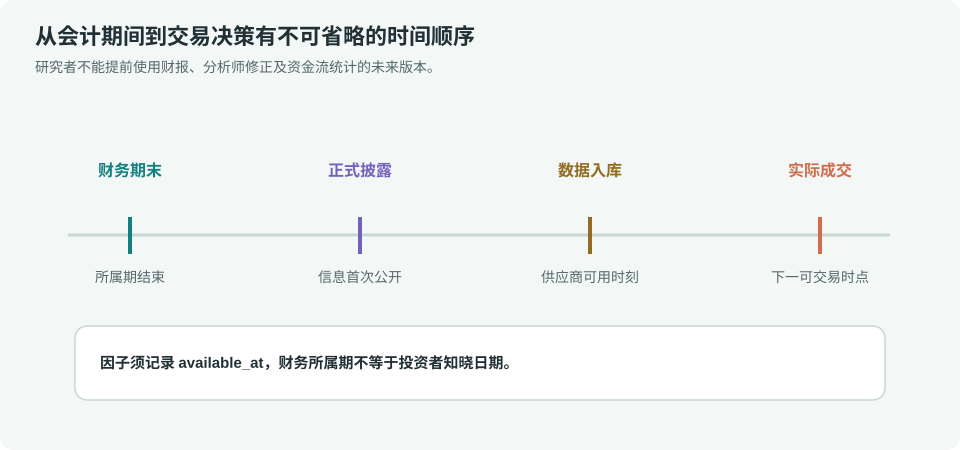

CHAPTER 21 · FACTOR INVESTIGATION
前沿因子：研发、POR、资金流与预期
新指标只有定义精确、数据可得、经济机制可信且成本后样本外有效，才值得投入研究。
研发投入高，为什么未来投资回报并不一定高？
研究一家创新企业时，不能将研发费用增加直接翻译为未来股价回报。研发投入先经过技术试验、产品开发、合规批准、客户采纳和市场竞争，才可能形成利润和自由现金流。每个阶段都可能失败，且研发费用和资本化研发支出在不同准则下有不同确认时点。
前沿因子研究的重点，是对一个可反驳的经济机制设计观测变量，而不是给旧指标换一个新名字。因子必须定义构造、数据可用时间、样本池、风险暴露与样本外成本后效果。

研发因子：指标定义需要同时考虑会计口径与滞后期
最直观的研发强度指标可定义为同期间研发费用除以营业收入。构造例子：研发费用12百万元、收入200百万元，则强度为6%。但若收入很小甚至为零，分母会使指标失真。还应区分费用化与资本化、并购取得的技术、项目持续年限和行业结构。
研发因子还可以研究研发强度变化、研发投入与技术产出、研发投入与后续新增收入的联系。相关关系可能源于行业、规模、成长阶段和竞争位置，必须实施行业/市值中性化对照；研发项目的失败样本不能从样本池里删除。
POR：把价值带与市场价之间的距离变成可检验的研究信号
开源证券2026年5月发布的金工研究讨论“业绩透支度”（POR）因子，先根据盈利预测和估值方法建立价值带，再计算其与当前股价的相对距离，取负以统一方向，并比较PE、PB、PS以及不同盈利预期构造。它是有具体模型和实证样本的研究方法，不是存在一个可直接观测的“真实股价”。

为了理解相对距离，先构造一个非原版的简化偏离代理：
P=10、V=15时结果为−50%。这个值不代表确定的50%投资收益，且与原报告多估值体系融合的POR不是一回事；若参照值假设错误、公司发生融资稀释或风险溢价上升，市场价可能继续下降。
资金流因子：成交的每一笔都有买方和卖方
所谓“资金净流入”通常来自特定数据提供商对主动买、主动卖、成交量和价格位置的分类，并非股票市场真的出现一个没有对手方的净买入总账。资金流指标应说明成交方向如何判断、采用tick或日频、除以成交额还是流通市值、停牌日如何处理、是否考虑大宗交易与异常成交。
构造指标可以是（主动买成交额−主动卖成交额）/总成交额，或多个交易日标准化后的顺序统计，但不能据此断言“资金净流入直接导致价格上涨”。信息、预期和流动性会同时影响成交与价格。回测必须将同一个交易日盘后才得到的统计留到下一允许执行时点。
分析师盈利预期与财报数据：必须知道何时公布
分析师预期上修或下修需要至少三组时间信息：预测针对的财年、分析师报告发布日期、数据供应商实际入库时间。对未覆盖公司，不能把缺失预期直接替换为0。不同公司的分析师覆盖数、研报时间和财务披露延迟也不同，应进行覆盖范围稳健性比较。

将最新共识盈利预测回填到过去月份，等同于使用未来信息。正确的历史研究应保存历史快照、首次公告与修订版本，并确保每个投资决策只能看到当时合法可得的数据。
行业景气因子：从原始订单到可交易收益还隔着价格
行业研究可以同时观察订单、产能利用率、库存、销售价格、信用条件、利润修正和相对动量。不同指标有领先、同步或滞后属性；用最新季度财报与历史月末价格拼接，会把未来公告混入当月。先定义所属期与available_at，再按交易日历将信号映射到下一个可执行时段。
被市场提前反映的景气改善未必带来新的相对收益。行业ETF还存在基金费用、跟踪误差和交易限制；个股篮子则有停牌、成分变动和成交容量。模型应和简单等权或行业动量基准进行样本外比较。
研究验证：避免把众多试验中最好的一次当成普遍规律
每个因子都要记录数学定义、字段、单位、可用时点、样本池、缺失处理、行业和规模暴露、调仓时机、预测区间、IC/Rank IC、净成本收益、容量、极端情景、参数探索次数和最终独立样本。明确区分研究作者原始结果、当前教程的构造演示以及尚未证实的猜想。
检查
- 研发强度6%为什么不等于未来回报6%？
- 为什么本文的(P−V)/P实验不能直接称为开源证券完整POR因子？
- 资金流净流入是交易账目的无对手方增加吗？
- 为什么分析师预测修正必须使用首次公开时间？
资料来源与研究边界
- 开源证券（2026-05）业绩透支度组合构建，原机构研究转引
- 该研究报告目录及POR构造说明
- CFA Institute：Equity Valuation Concepts 2026
- CFA Institute：Backtesting and Simulation 2026
研究因子不是已经证实的未来收益规律，样本与市场范围需独立验证。